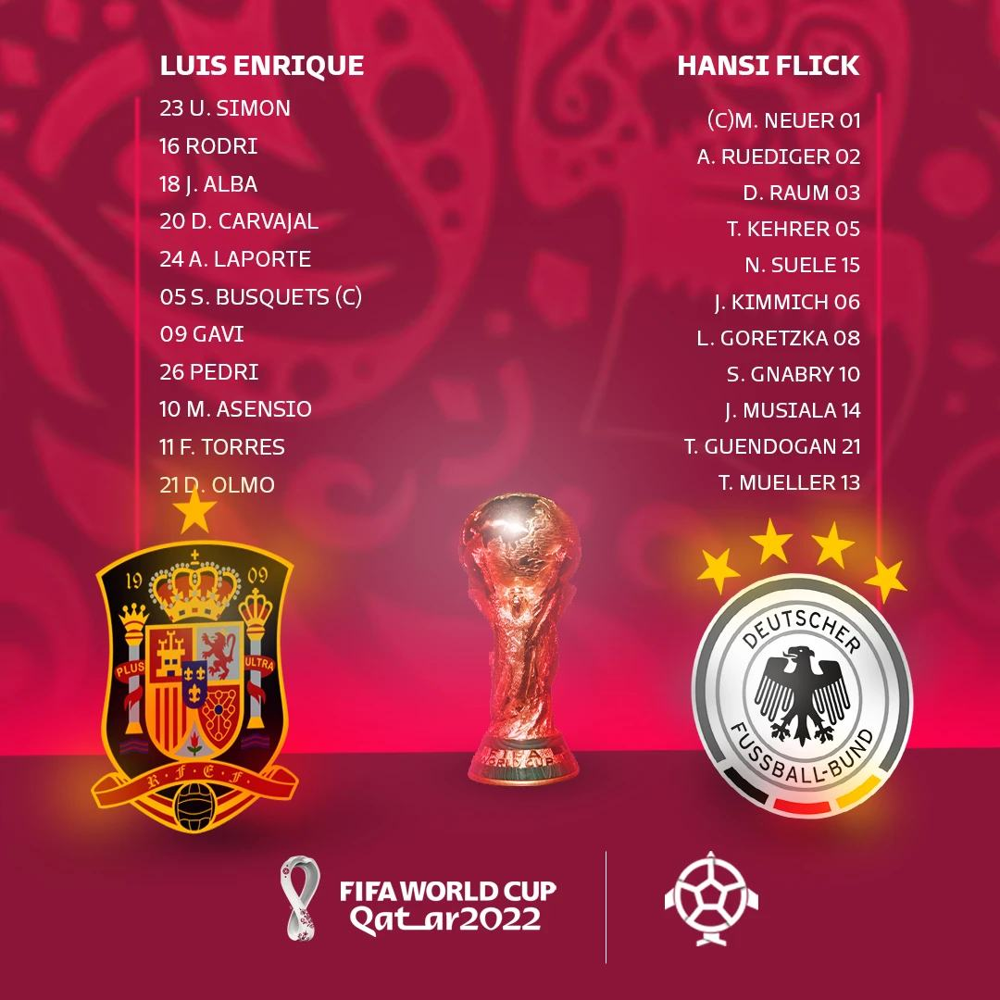
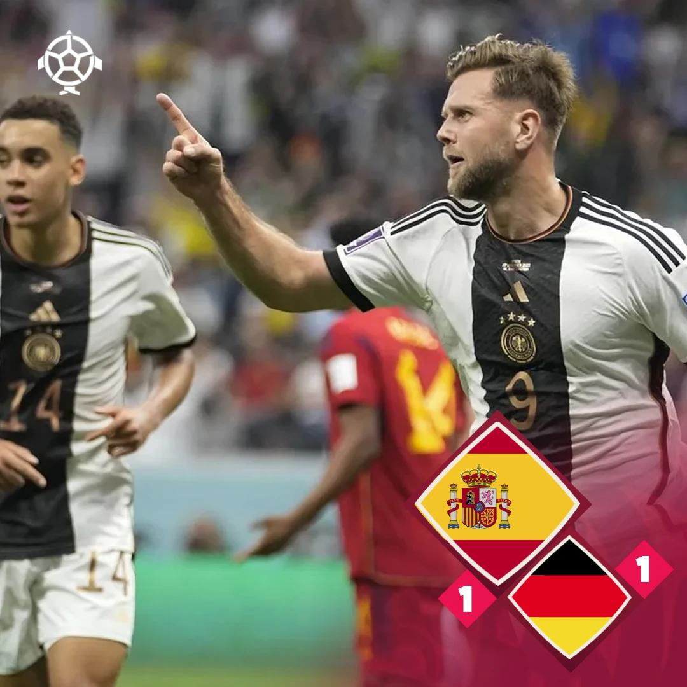
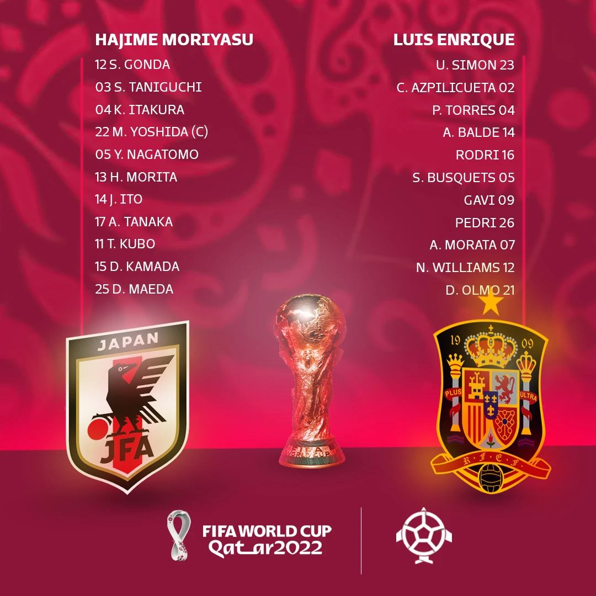
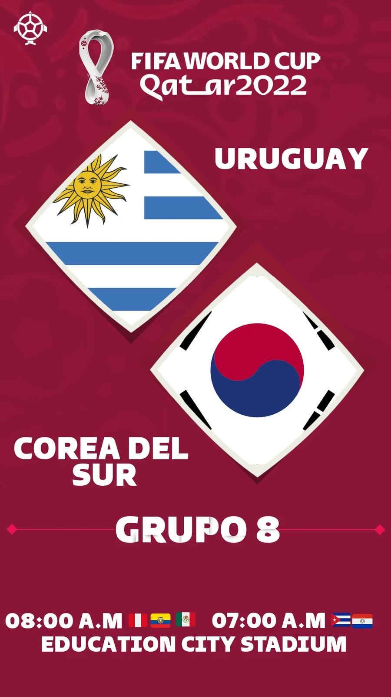
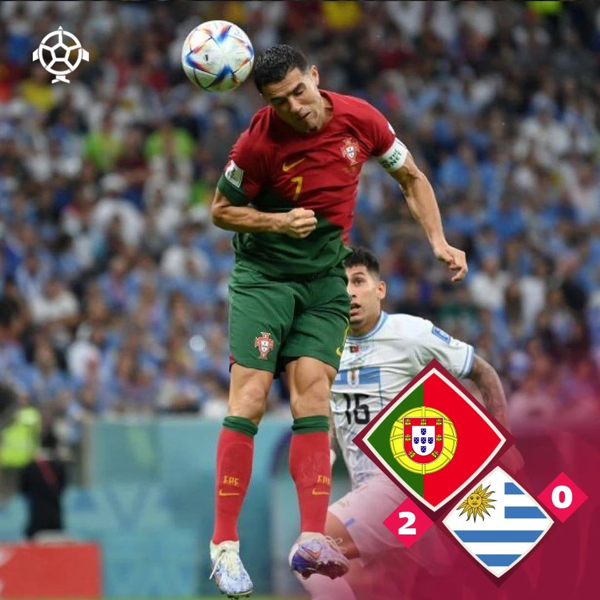
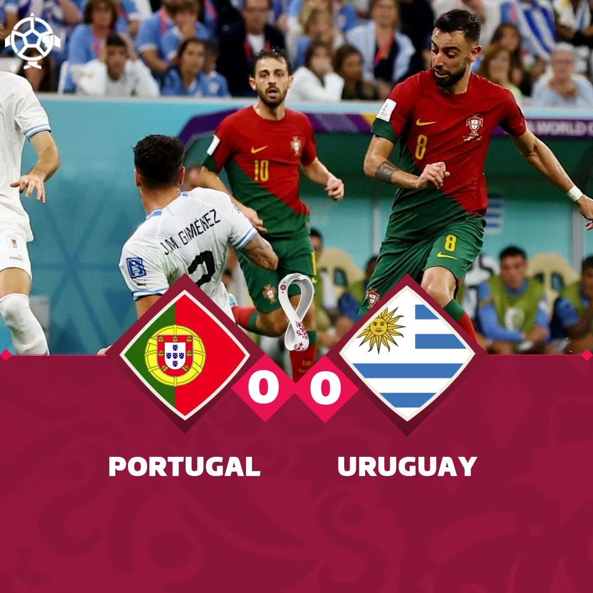
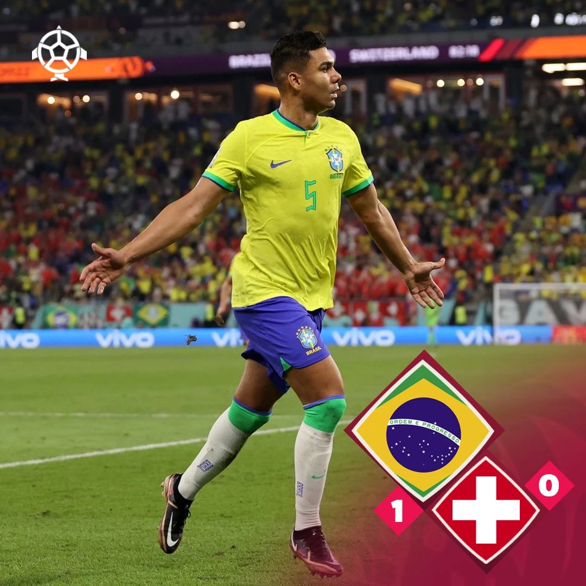
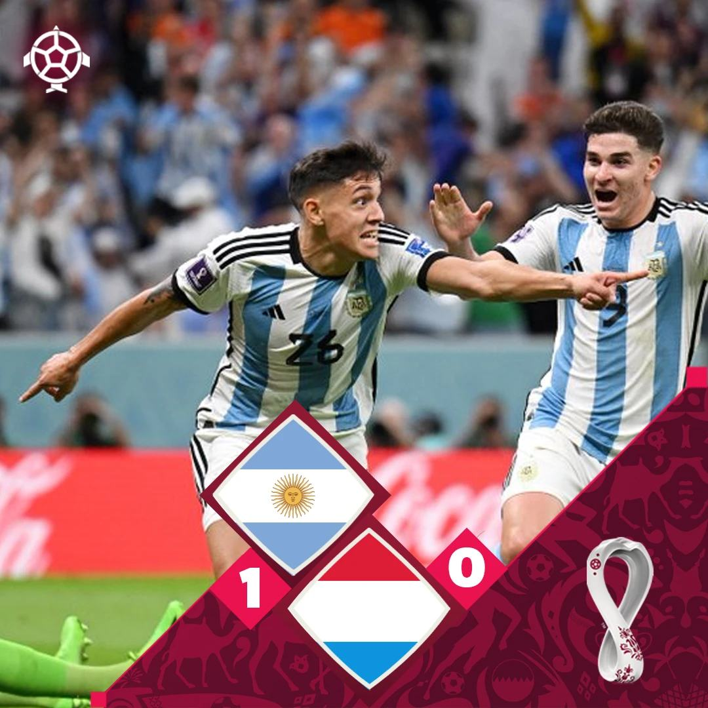
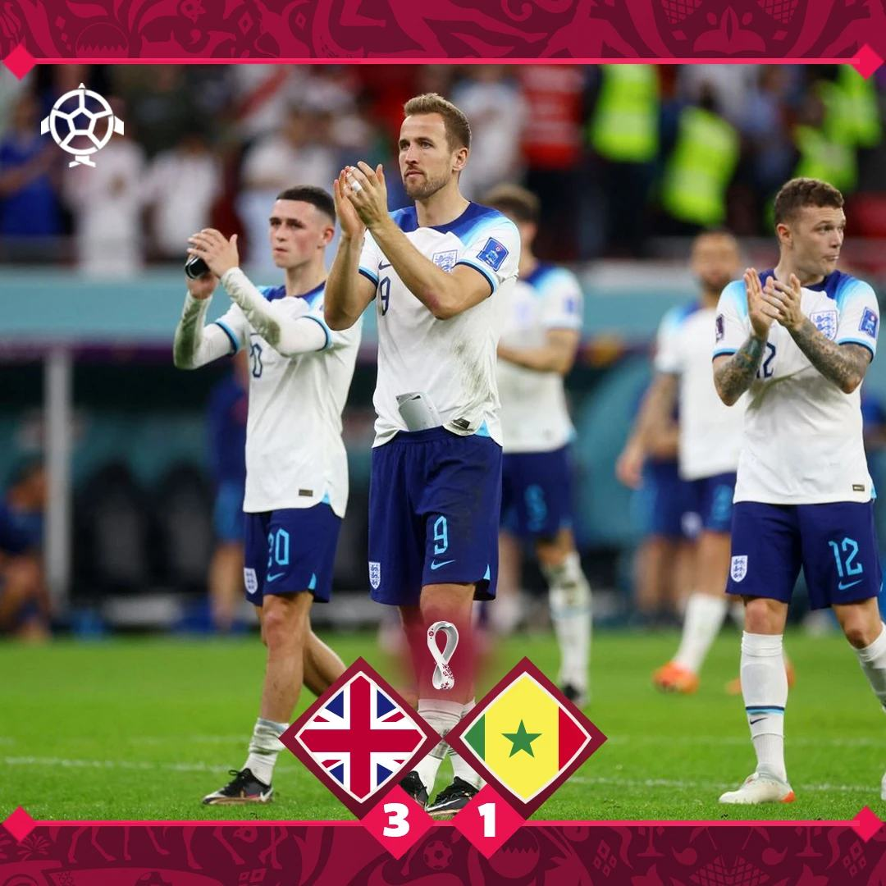

Índice / 09 / Branding y redes
Qatar 2022

Sistema de piezas para redes durante la Copa Mundial de la FIFA Qatar 2022.
Grupos, sedes, alineaciones, resultados y cuadro final con un mismo sistema en granate.
Banderas en rombo, marcadores grandes y fotografía de partido para publicar el mismo día de cada juego.
- 37
- piezas
- 8
- sedes
- 32
- selecciones




















